↑Paper Plane xUI
●初期カスタマイズ、黒背景(WindowsVista)
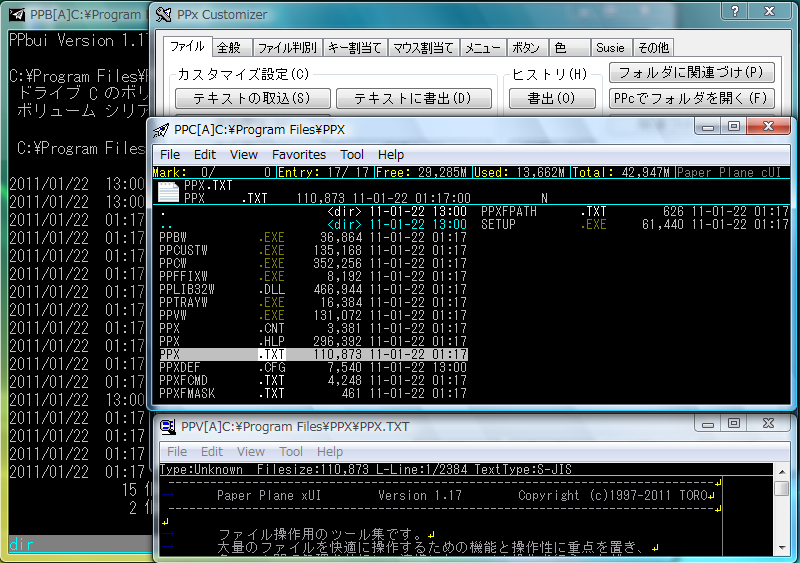
●初期カスタマイズ、配色はWindowsまかせ(WindowsXP)
※setup.exeで「エクスプローラ」を選択
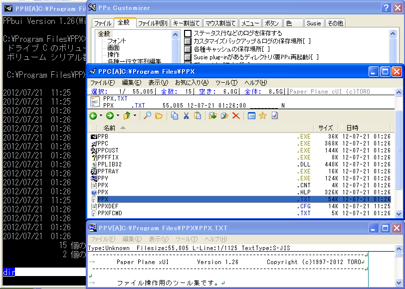
●英語版Windows上の動作例(Windows95英語版)
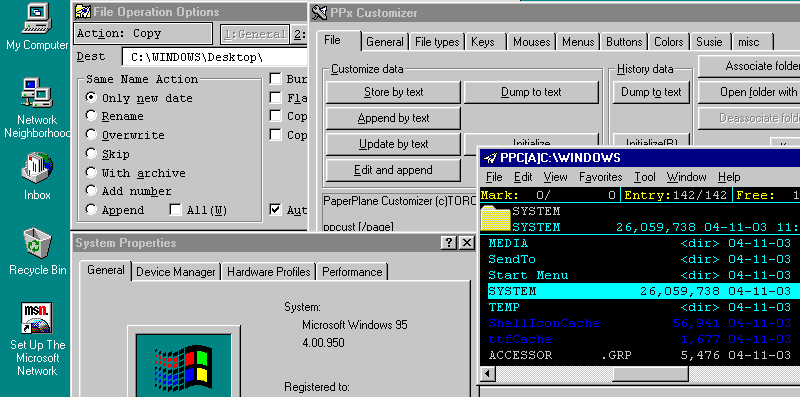
●PPc一体化表示(Windows8 64bit版PPx)
・ドライブ一覧、ツールバー、アドレスバー、共用ツリー、ペインを上下表示、タブ、カラムヘッダ、ログ、処理中一覧を表示。
※カスタマイザの全般タブ-PPc-画面構成-一体化関連を各種設定。
・タブは、ペイン毎に表示、タブの一覧はペイン間で共用、タブを着色、タブ幅を固定、多段表示、位置固定
※カスタマイザの全般タブ-PPc-画面構成-タブの動作を各種設定。
・CFX Module でドライブの使用容量をグラフ表示
※CFX Module は別途配布の PPXCFX.DLL / PPXCFX64.DLL を入れたのち、カスタマイザのその他タブ-PPcステータス行書式/XC_stat-編集、「モジュール拡張」を挿入し、「ドライブ使用量(グラフのみ)」を選択。
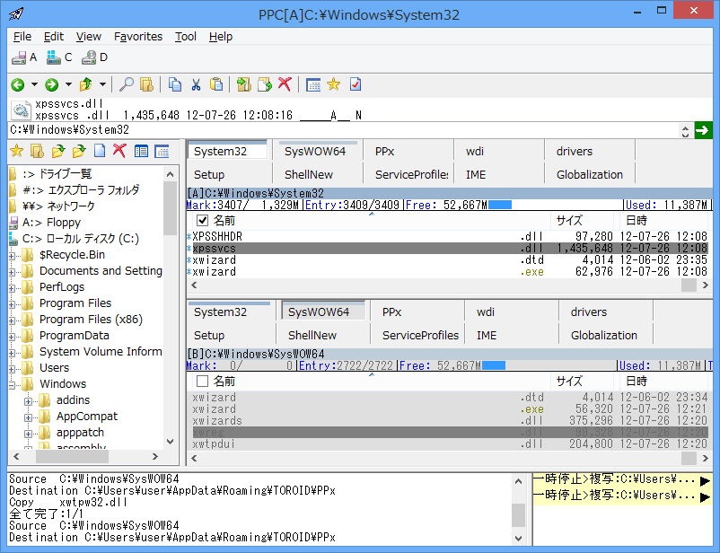
●PPc一体化表示(Windows98SE)
設定:
カスタマイザ
・Windowsの設定に合わせる配色の取り込み
・全般タブ→PPc-表示-カーソル／マーク表示の「カーソルの形状は」を「下線を引く」
・全般タブ→PPc-操作-カーソル移動・クリック挙動の「窓越えカーソル…」をチェック
・全般タブ→PPc-画面構成-一体化関連の「複数PPcを一体化させ…」をチェック
PPc
・カスタマイザによる設定後 PPcを再起動し、各窓でメニューView→表示切替、「windowfill」を選択
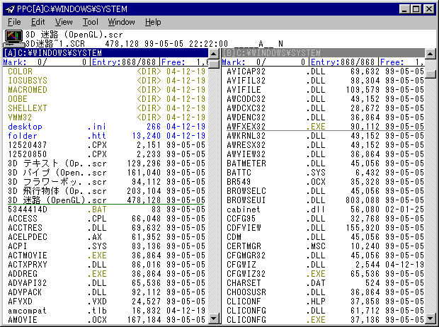
●PPc一体化表示+タブ(Windows95OSR2)
設定:
カスタマイザ
・全般タブ→PPc-画面構成-一体化関連の「複数PPcを一体化させ…」と「タブを常時表示」をチェック
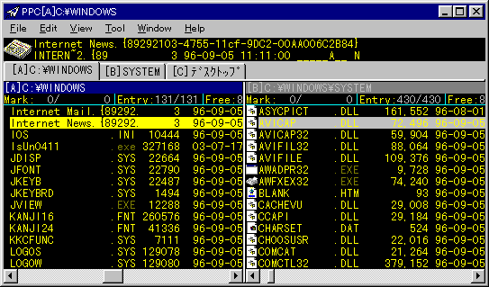
●PPcツリー表示例(WindowsNT4.0)
PPcで常時ツリー表示する設定:
・メニューView→ツリー窓
一行編集(スクリーンショットではパス変更)で常時ツリー表示する設定:
・カスタマイザの全般タブ→全般-その他の「ディレクトリ入力方法は」を変更
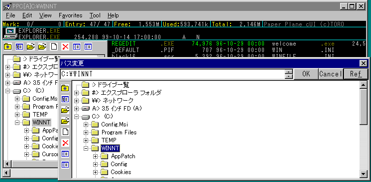
●PPcエントリ一覧内のアイコン表示例(Windows2000)
※メニューView→表示切替で「Icons3」を選択
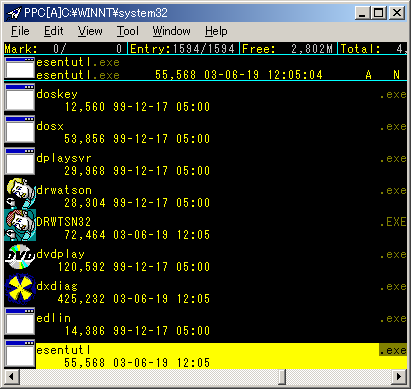
●PPc D&Dメニューとファイル操作ダイアログ表示例(WindowsXP)
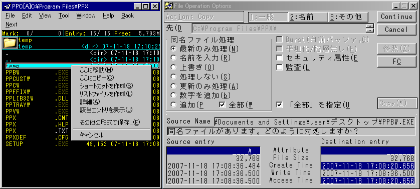
●PPcファイル検索ダイアログと結果の例(WindowsXP)
操作 : メニューEdit→検索
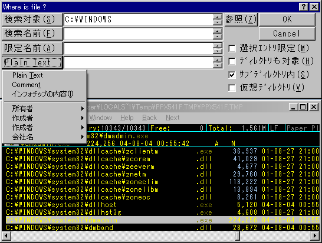
●PPcのカーソル移動に連動して更新される各種表示機能(WindowsXP)
左下：連動プロパティ(Alt+Shift+Enter , *syncprop)
右中央：連動ファイル詳細情報(Ctrl+Shift+I , %K"@^\I")
右下：連動ビュー(プレビュー相当機能、Shift+Y , %K"@\Y")
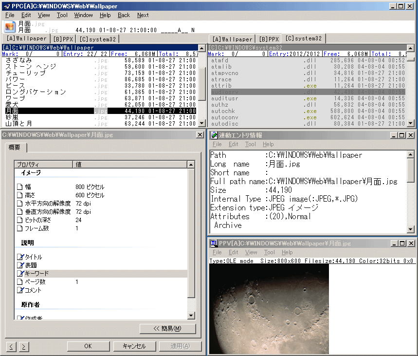
●PPv行番号表示、検索、選択例(WindowsVista)
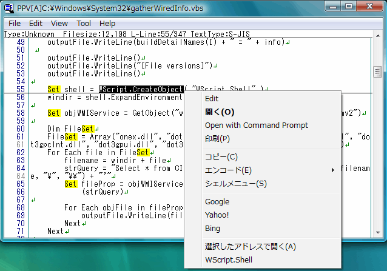
●カスタマイズ例(Windows95 OSR2)。レイアウト変更の他、左右連結、スクロール移動、メニューカスタマイズを行なっている
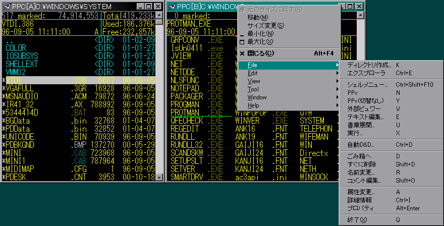
●Wine上の試作版。試作版はubuntu上でソースをmakeして作成可能。
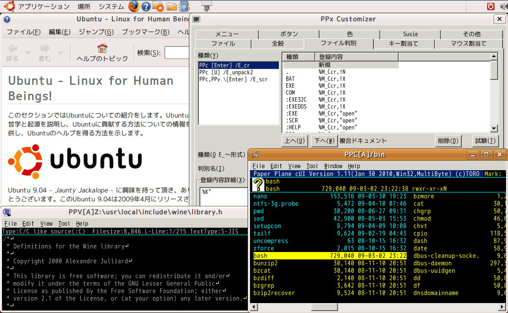
●DirectWrite/Direct2D版の表示例(Windows10 TH2)。色つきの絵文字が表示されている箇所がDirectWrite/Direct2Dで表示されている箇所である。

Copyright(c)1997-2020 TORO/高橋 良和 E-mail: toroid.jp @gmail.com